공조냉동기계기사(구) (2011-08-21 기출문제)
1과목: 기계열역학
1. 열효율이 30%인 증기사이클에서 1kWh의 출력을 얻기 위하여 공급되어야 할 열량은 몇 kWh인가?
- 9.25
- 2.51
- 3.33
- 4.90
(정답률: 71%)

2. 등엔트로피 효율이 80%인 소형 공기 터빈의 출력이 270kJ/kg 이다. 입구 온도는 600K이며, 출구 압력은 100kPa이다. 공기의 정압비열은 1.004 kJ/kg · K, 비열비는 1.4이다. 출구 온도(K)와 입구 압력(kPa)은 각각 얼마인가?
- 약 264 K, 1774 kPa
- 약 264 K, 1842 kPa
- 약 331 K, 1774 kPa
- 약 331 K, 1842 kPa
(정답률: 39%)
3. 랭킨(Rankine) 사이클의 각 점(그림 참조)에서 엔탈피가 다음과 같다. h1 =100 kJ/kg, h2 = 110 kJ/kg, h3 = 2000 kJ/kg, h4 = 1500 kJ/kg 이 사이클의 열효율은?
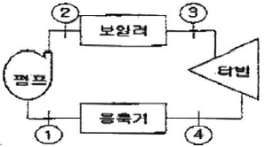
- 28%
- 26%
- 24%
- 30%
(정답률: 64%)
4. 순수한 물질로 되어 있는 밀폐계가 단열과정 중에 수행한 일의 절대값에 관련된 설명으로 옳은 것은?(단, 운동에너지와 위치에너지의 변화는 무시한다.)
- 엔탈피의 변화량과 같다.
- 내부 에너지의 변화량과 같다.
- 일의 수행은 있을 수 없다.
- 정압과정에서 이루어진 일의 양과 같다.
(정답률: 61%)
5. 100 kPa, 25℃ 상태의 공기가 있다. 이 공기의 엔탈피가 298.615 kJ/kg 이라면 내부에너지는 얼마인가?(단, 공기는 이상기체로 가정한다.)
- 213.99 kJ/kg
- 291.07 kJ/kg
- 298.15 kJ/kg
- 383.72 kJ/kg
(정답률: 51%)
6. 환산 온도(Tr)와 환산 압력(Pr)을 이용하여 나타낸 다음과 같은 상태방정식이 있다.
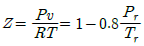
어떤 물질의 기체상수가 0.189 kJ/kgk, 임계온도가 3⑤ K, 임계압력이 7380 kPa이다. 이 물질의 비체적을 위의 방정식을 이용하여 20℃, 1000kPa 상태에서 구하면?- 0.0111 m3/kg
- 0.0303 m3/kg
- 0.0492 m3/kg
- 0.⑤54 m3/kg
(정답률: 46%)
7. 공기표준 동력사이클에서 오토사이클이 디젤사이클과 다른 과정은?
- 가열 과정
- 팽창 과정
- 방열 과정
- 압축 과정
(정답률: 43%)
8. 화력발전의 열효율은 39%이고, 발열량(kWh)을 기준으로 한 원가는 12원/kWh이다. 복합발전의 열효율은 48%이고 발열량(kWh)을 기준으로 한 원가는 41원/kWh이다. 전력 수요에 대응하면서 발전원가를 최소로 하기 위한 선택으로 옳은 것은?
- 화력발전만을 사용한다.
- 복합발전만을 사용한다.
- 화력발전과 복합발전을 함께 1:1로 사용한다.
- 화력발전과 복합발전 중 어느 것을 사용해도 관계없다.
(정답률: 59%)
9. 카르노 사이클(Carnot cycle)은 다음 가역과정으로 이루어져 있다. 어느 것인가?
- 두개의 등온과정과 두개의 단열과정
- 두개의 정압과정과 두개의 정적과정
- 두개의 정적과정과 두개의 단열과정
- 두개의 등온과정과 두개의 정적과정
(정답률: 68%)
10. 그림과 같이 실린더 내의 공기가 상태 1에서 상태 2로 변화할 때 공기가 한 일은?
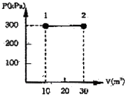
- 30 kJ
- 200 kJ
- 3000 kJ
- 6000 kJ
(정답률: 70%)
11. 체적이 500 cm3인 풍선이 있다. 이 풍선에 압력 0.1MPa, 온도 288 K의 공기가 가득 채워져 있다. 압력이 일정한 상태에서 풍선 속 공기 온도가 300 K로 상승했을 때 공기에 가해진 열량은?(단, 공기의 정압비열은 1.0⑤ kJ/kg·K, 기체상수 0.287 kJ/kg·K 이다.)
- 7.3 J
- 7.3 KJ
- 73 J
- 73 KJ
(정답률: 50%)
12. 여름철 냉방으로 인한 전력 부하 상승은 발전시스템에 큰 부담이 되고 있다. 이러한 관점에서 천연가스를 열원으로 사용하는 흡수식 냉동기에 관심이 집중되고 있다. 흡수식 냉동기에 대한 설명 중 잘못된 것은?
- 암모니아를 작동유체로 사용할 수 있다.
- 액체를 가압하므로 소요되는 일이 매우 적다.
- 증기 압축 냉동기에 비해 더 많은 장비가 필요하므로 장치가 복잡하다.
- 흡수기에서 열을 발생시키기 위하여 열원이 필요하다.
(정답률: 39%)
13. 100 kg의 물체가 해발 60 m에 떠 있다. 이 물체의 위치에너지는 해수면 기준으로 약 몇 kJ 인가?(단, 중력가속도는 9.8 m/s2이다.)
- 58.8
- 73.4
- 98.0
- 122.1
(정답률: 73%)
14. 다음 중 기체상수(R)가 제일 큰 것은?
- 수소
- 질소
- 산소
- 이산화탄소
(정답률: 71%)
15. Joule-Thomson 계수
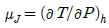
로 정의된다. 양(+)의 Joule-Thomson 계수는 교축(throttle) 중에 온도가 어떻게 된다는 것을 뜻하는가?- 온도가 올라간다는 것을 뜻한다.
- 온도가 떨어진다는 것을 뜻한다.
- 온도가 일정하다는 것을 뜻한다.
- 온도가 올라가고 압력은 내려간다.
(정답률: 55%)
16. 두께가 10 cm 이고, 내·외측 표면온도가 20℃, -5℃ 인 벽이 있다. 정상상태일 때 벽의 중심온도는 몇 ℃인가?
- 4.5
- 5.5
- 7.5
- 12.5
(정답률: 55%)
17. 밀폐 시스템의 가역 정압 변화에 관한 다음 사항중 올바른 것은? (단, U : 내부에너지, Q : 전달열, h: 엔탈피, v : 비체적, W : 일이다.)
- du = dQ
- dh = dQ
- dv = dQ
- dW = dQ
(정답률: 67%)
18. 다음 중 강도성 상태량(intensive property)이 아닌것은?
- 온도
- 압력
- 체적
- 밀도
(정답률: 70%)
19. 여름철 외기의 온도가 30℃일 때 김치 냉장고의 내부를 5℃로 유지하기 위해 3kW의 열을 제거해야 한다. 필요한 최소 동력은 약 몇 kW 인가?
- 0.27
- 0.54
- 1.54
- 2.73
(정답률: 53%)
20. Carnot 냉동기는 온도 27℃인 주위로 열을 방출하여 냉동실의 온도를 5℃로 유지하고 있다. 냉동실에서 주위로의 열손실은 온도차에 비례한다. 냉동실의 온도를 -5℃로 내리려면 입력일이 처음의 몇 배가 되어야 하는가?
- 5.5배
- 4.5배
- 3.2배
- 2.2배
(정답률: 43%)
2과목: 냉동공학
21. 증기분사식 냉동기에 대한 설명 중 옳지 않은 것은?
- 물의 증발잠열을 이용하여 냉동효과를 얻는다.
- 공급 열원은 증기이다.
- -10℃ 정도의 냉각에 이용된다.
- 증기를 고속으로 분출시켜 증기를 증발기로부터 끌어올려 저압을 형성한다.
(정답률: 50%)
22. 냉각수 입구온도 25℃, 냉각수량 1000L/min인 응축기의 냉각 면적이 80m2, 그 열등과율이 600kcal/m2h℃이고, 응축온도와 냉각 수온의 평균 온도차가 6. 5℃이면 냉각수 출구온도는 몇 ℃인가?
- 28.4℃
- 32.6℃
- 29.6℃
- 30.2℃
(정답률: 61%)
23. 냉동장치 운전 중 팽창밸브의 열림이 적을 때 발생하는 현상이 아닌 것은?
- 증발압력은 저하한다.
- 순환 냉매량은 감소한다.
- 압축비는 감소한다.
- 체적효율은 저하한다.
(정답률: 65%)
24. 암모니아 냉동기의 배관재료로서 부적절한 것은 어느 것인가?
- 배관용 탄소강 강관
- 동합금관
- 압력배관용 탄소강 강관
- 스테인리스 강관
(정답률: 81%)
25. 냉동기에 사용되는 냉매는 일반적으로 비체적이 적은 것이 요구된다. 그러나 냉매의 비체적이 어느 정도 큰 것을 사용하는 냉동기는 어느 것인가?
- 회전식
- 흡수식
- 왕복동식
- 터보(원심)식
(정답률: 52%)
26. 제빙장치에서 브라인온도 -10℃, 결빙시간 48시간 흡입증기의 엔탈피 400(kcal/kg) 흡입증기의 비체적 0.38(m3/kg)체적 효율 0.72기계 효율 0.90압축 효율 0.80[조건]일 때 얼음의 두께는 약 얼마인가?(단, 결빙계수는 0.56이다.)
- 293mm
- 393mm
- 29.3mm
- 39.3mm
(정답률: 39%)
27. 압축기에 대한 설명 중 옳지 못한 것은?
- 고속다기둥 압축기는 입형압축기의 실린더수를 많이 한 것이다.
- 체적효율이란 압축기의 실제적인 흡입량과 이상적 흡입량의 비를 말한다.
- 터보 압축기의 종속장치는 하이포이드 기어를 채용한다.
- 압축비란 압축기의 토출축과 흡입축의 절대 압력의 비를 말한다.
(정답률: 60%)
28. 냉매의 구비조건 중 맞는 것은?
- 활성이며 부식성이 없을 것
- 전기저항이 적을 것
- 점성이 크고 유통저항이 클 것
- 열전달율이 양호할 것
(정답률: 62%)
29. 흡수냉동기의 용량제어법으로 적당하지 않은 것은?
- 냉각수의 교축
- 냉수의 교축
- 가열증기 드레인의 교축
- 용액순환량의 교축
(정답률: 41%)
30. 피스톤 압출량이 320m3/h인 압축기가 다음과 같은 조건으로 단열 압축 운전되고 있을 때 토출가스의 엔탈피는 446.8kcal/kg이었다. 이 압축기의 소요동력(kW)은 약 얼마인가?
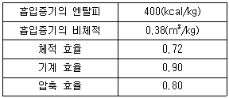
- 32.9
- 37.4
- 45.8
- 48.6
(정답률: 56%)
31. 2단 압축 1단 팽창식과 2단 압축 2단 팽창식을 동일운전조건하에서 비교한 설명 중 맞는 것은?
- 2단 팽창식의 경우가 조금 성적계수가 높다.
- 2단 팽창식의 경우가 운전이 용이하다.
- 2단 팽창식은 중간냉각기를 필요로 하지 않는다.
- 1단 팽창식의 팽창밸브는 1개가 좋다.
(정답률: 73%)
32. 어떤 냉동시스템 고온부의 절대온도를 T1 저온부의 절대온도를 T2, 고온부로 배출하는 열량을 Q1저온부로부터 흡수(취득)하는 열량을 Q2 라고 할 때 이 냉동시스템의 이론 성적계수(COP)를 구하는 식은 어느것인가?
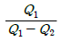
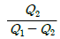
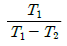
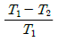
(정답률: 80%)
33. 공냉식 응축기에서 열통과량을 증대시키기 위한 방법으로 적당하지 못한 것은?
- 전열면에 핀(fin)을 부착한다.
- 관 두께를 얇게 한다.
- 응축압력을 낮춘다.
- 냉매와 공기와의 온도차를 증가시킨다.
(정답률: 59%)
34. 전열면적 4.5m2, 열통과율 800kcal/m2h℃인 수냉식 응축기를 사용하는 냉각장치가 있다. 또한 응축기를 냉각수 입구 온도 32℃로 운전하는 경우 응축온도가 40℃가 된다. 이 응축기의 냉각수량은 몇 L/min인가? (단, 냉매와 냉각수간의 온도차는 산술평균 온도차 5℃를 사용한다.)
- 30(L/min)
- 50(L/min)
- 60(L/min)
- 80(L/min)
(정답률: 56%)
35. 흡수식 냉동기에서의 냉각원리로 적당한 것은?
- 물이 증발할 때 주위에서 기화열을 빼앗고 열을 빼앗기는 쪽은 냉각되는 현상을 이용
- 물이 응축할 때 주위에서 액화열을 빼앗고 열을 빼앗기는 쪽은 냉각되는 현상을 이용
- 물이 팽창할 때 주위에서 팽창열을 빼앗고 열을 빼앗기는 쪽은 냉각되는 현상을 이용
- 물이 압축할 때 주위에서 압축열을 빼앗고 열을 빼앗기는 쪽은 냉각되는 현상을 이용
(정답률: 80%)
36. 압축기가 과열되는 원인이 아닌 것은?
- 토출변의 누설
- 워터자켓 기능 불량
- 냉매량 부족
- 압축비 감소
(정답률: 77%)
37. 냉동기 중 폐열을 이용하기 적합한 냉동기는?
- 흡수식 냉동기
- 전자식 냉동기
- 터보 냉동기
- 회전식 냉동기
(정답률: 71%)
38. 프레온계 냉매를 사용하는 압축기를 기동할 때 오일이 올라가지 않아 윤활불량을 일으키는 원인으로 맞는 것은?
- 오일포밍
- 전압강하
- 고압상승
- 응축기 냉각수 오염
(정답률: 85%)
39. 열펌프의 특징에 대한 설명으로 틀린 것은?
- 성적계수가 1보다 작다.
- 하나의 장치로 난방 및 냉방으로 사용할 수 있다.
- 증발온도가 높고 응축온도가 낮을수록 성적계수가 커진다.
- 대기오염이 없고 설치공간을 절약할 수 있다.
(정답률: 79%)
40. 축열시스템의 방식에 대한 설명 중 잘못된 것은?
- 수축열 방식 : 열용량이 큰물을 축열제로 이용하는 방식
- 빙축열 방식 : 냉열을 얼음에 저장하여 작은 체적에 효율적으로 냉열을 저장하는 방식
- 잠열축열 방식 : 물질의 융해 및 응고 시 상변호에 따른 잠열을 이용하는 방식
- 토양축열 방식 : 심해의 해수온도 및 해양의 축열성을 이용하는 방식
(정답률: 79%)
3과목: 공기조화
41. 열펌프에 대한 설명으로 올바르지 못한 것은?
- 열펌프의 성적계수(COP)는 냉동기의 성적계수보다는 1만큼 더 크게 얻을 수 있다.
- 공기-공기방식에서 냉매회로교체의 경우는 장치가 간단하나 축열이 불가능하다.
- 공기-물방식에서 물회로교체의 경우 외기가 0℃이하 에서는 브라인을 사용하여 채열한다.
- 물-물방식에서 냉매회로교체의 경우는 축열조를 사용할 수 없으므로 대형에 적합하지 않다.
(정답률: 66%)
42. 환기횟수를 나타낸 것으로 맞는 것은?
- 매시간 환기량 x 실용적
- 매시간 환기량 + 실용적
- 매시간 환기량 - 실용적
- 매시간 환기량 ÷ 실용적
(정답률: 64%)
43. 에너지 절약의 효과 및 사무자동화(OA)에 의한 건물에서 내부발생열의 증가와 부하변동에 대한 제어성이 우수하기 때문에 대규모 사무실 건물에 적합한 공기조화 방식은?
- 정풍량(CAV) 단일덕트 방식
- 유인유닛 방식
- 룸 쿨러 방식
- 가변풍량(VAV) 단일덕트 방식
(정답률: 76%)
44. 침엽 외기에 의한 손실열량 중 현열부하율을 구하는 식은 어느 것인가? (단, 식에서 f는 온도, x는 절대습도, Q는 풍량을 나타내고 아래 첨자 r은 실내, o는 실외를 나타낸 것이다.)
- q=0.29Q(t0-tr)
- q=717Q(t0-tr)
- q=0.29Q(x0-xr)
- q=0.24Q(x0-xr)
(정답률: 60%)
45. 국부저항 상류의 풍속을 V1, 하류의 풍속을 V2라 하고 전압기준 국부저항계수를 ζT, 정압기준 국부저항 계수를 ζS라 할 때 두 저항 계수의 관계식은?
- ζT=ζS+1-(V1/V2)2
- ζT=ζS+1-(V2/V1)2
- ζT=ζS+1+(V1/V2)2
- ζT=ζS+1+(V2/V1)2
(정답률: 66%)
46. 어떤 방의 실내온도 20℃, 외기온도 -5℃인 경우 온수방열기의 방열면적이 5m2 EDR인 방의 방열량은?
- 2000kcal/h
- 2250kcal/h
- 1000kcal/h
- 1520kcal/h
(정답률: 68%)
47. 냉난방 설계용 외기조건에서 난방 설계용 외기온도는 난방기간 2904시간 중 2831시간은 외기온도가 설정된 외기온도보다 높으므로 정해진 난방장치로 충분하지만 나머지 73시간은 설계 외기온도보다 낮아 질 가능성이 있다는 뜻으로서 올바른 것은?
- TAC 1%
- TAC 1.5%
- TAC 2.5%
- TAC 97.5%
(정답률: 68%)
48. 다음 설명 중 옳지 않은 것은?
- 건공기는 산소, 질소, 탄산가스, 아르곤 및 헬륨 등의 기체가 혼합된 가스이다.
- 습공기는 건공기와 수증기가 혼합된 것이다.
- 포화공기의 온도를 습공기의 노점온도라 한다.
- 헌열비는 실내의 전체열량에 대한 잠열량의 비이다.
(정답률: 71%)
49. 다음 습공기 선도의 공기조화과정을 나타낸 장치도는? (단, ① = 외기, ② = 환기, RC = 가열기, CC = 냉각기이다.)
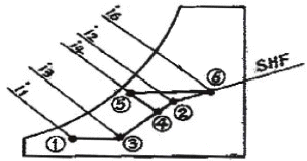
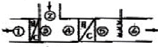
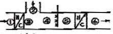
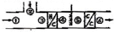
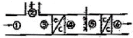
(정답률: 74%)
50. 온수난방에서 온수의 순환방식과 관계가 없는 것은?
- 중력순환 방식
- 강제순환 방식
- 역귀환 방식
- 진공환수 방식
(정답률: 65%)
51. 진공환수식 증기난방에 대한 설명으로 틀린 것은?
- 중력환수식, 기계환수식보다 환수관경을 작게 할수 있다.
- 방열량을 광범위하게 조정할 수 있다.
- 환수관도중 입상부를 만들 수 있다.
- 증기의 순환이 다른 방식에 비해 느리다.
(정답률: 72%)
52. 두께 30cm, 벽면의 면적이 30m2인 벽돌벽이 있다. 내면의 온도가 20℃, 외면의 온도가 32℃일 때, 이 벽을 통한 열전열량은 몇kcal/h인가? (단, 벽돌의 열전도율 λ= 0.7kcal/mh℃이다.)
- 510
- 620
- 730
- 840
(정답률: 66%)
53. 덕트의 설계 시 덕트치수 결정과 관계가 없는 것은?
- 공기의 온도(℃)
- 풍속(m/s)
- 풍량(m3/h)
- 마찰손실(mmAq)
(정답률: 74%)
54. 냉수코일의 설계에 대한 설명으로 맞는 것은?(단, gs : 코일의 냉각부하, k：코일전열계수, FA : 코일의 정면면적, MTD : 대수평균온도차(℃), u : 젖은 면계수이다.)
- 코일내의 순환수량은 코일 출입구의 수온차가 약 5~9℃가 되도록 선정하고 입구온도는 출구 공기 온도보다 3~5℃ 낮게 취한다.
- 관내의 수속은 3m/s 내외가 되도록 한다.
- 수량이 적어 관내의 수속이 늦게 될 때에는 더블서킷(double circuit)을 사용한다.
- 코일의 열수 N=(gs x MTD)/(M x k x FA)이다.
(정답률: 44%)
55. 두께 8mm 유리창의 열관류율(kcal/m2h℃)은 약 얼마인가?(단, 내측 열전달율 4kcal/m2h℃, 외측 열전달율 10kcal/m2h℃, 유리의 열전도율 0.65kcal/m2h℃ 이다.)(오류 신고가 접수된 문제입니다. 반드시 정답과 해설을 확인하시기 바랍니다.)
- 0.36
- 1.2
- 2.76
- 3.25
(정답률: 68%)
56. 외기 온도가 -5℃이고, 실내 공급 공기온도를 18℃로 유지하는 히트 펌프가 있다. 실내 총 손실 열량이 50000kcal/h일때 외기로부터 침입되는 열량은 약몇 kcal/h인가?
- 23255kcal/h
- 33500kcal/h
- 46047kcal/h
- 50000kcal/h
(정답률: 46%)
57. 습공기를 단열 가습하는 경우에 열 수분비는 얼마인가?
- 0
- 0.5
- 1
- ∞
(정답률: 62%)
58. 산업용 공기 조화의 주요 목적이 아닌 것은?
- 제품의 품질을 보존하기 위하여
- 보관중인 제품의 변형을 방지하기 위하여
- 생산성 향상을 위하여
- 작업자의 근로시간을 개선하기 위하여
(정답률: 79%)
59. 외기의 공급은 없이 실내공기만이 계속 흡입되고, 다시 취출되어 부하를 처리하는 방식으로 주택, 호텔의 객실, 사무실 등에 많이 설치하는 공조기는?
- 팩케이지형 공조기
- 인덕숀 유닛
- 펜코일 유닛
- 에어핸드링 유닛
(정답률: 76%)
60. 공기조화기(AHU)에 내장된 전열교환기에 대한 설명으로 가장 알맞은 것은?
- 환기와 배기의 현열교환 장치이다.
- 배기와 도입 외기와의 잠열교환 장치이다.
- 환기와 배기의 잠열교환 장치이다.
- 배기와 도입 외기와의 전열교환 장치이다.
(정답률: 58%)
4과목: 전기제어공학
61. 그림의 논리회로를 NANO소자만으로 구성하려면 NANO소자는 최소 몇 개가 필요한가?
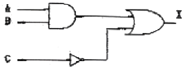
- 1
- 2
- 3
- 5
(정답률: 56%)
62. 어떤 회로에 정현파 전압을 가하니 90˚ 위상이 뒤진 전류가 흘렀다면 이 회로의 부하는?
- 저항
- 용량성
- 무부하
- 유도성
(정답률: 59%)
63. 다음 중 불연속제어에 해당되는 것은?
- 비례제어
- on-off제어
- 미분제어
- 적분제어
(정답률: 80%)
64. 정격 10[KW]의 3상 유도전동기가 기계손 200[W], 전부하 슬립 4%로 운전될 때 2차 동손은 약 몇[W]인가?
- 400
- 408
- 417
- 425
(정답률: 38%)
65. 저항4[Ω], 유도 리액턴스 3[Ω],을 직렬로 구성하였을때 전류가 5[A] 흐른다면 이 회로의 인가한 전압은 몇 [V]인가?
- 15
- 20
- 25
- 35
(정답률: 56%)
66. 다음 중 회로시험기로 측정할 수 없는 것은?
- 저항
- 교류전압
- 고주파전류
- 직류전류
(정답률: 67%)
67. 피드백 제어 시스템의 피드백 효과가 아닌 것은?
- 외부 조건의 변화에 대한 영향 감소
- 정확도 개선
- 대역폭 증가
- 시스템 간소화 및 비용 감소
(정답률: 78%)
68. 유도전동기에서 극수가 일정할 때 동기속도(Ns)와 주파수(f)와의 관계는?
- 회전자계의 속도는 주파수에 비례한다.
- 회전자계의 속도는 주파수에 반비례한다.
- 회전자계의 속도는 주파수의 제곱에 비례한다.
- 회전자계의 속도는 주파수와 관계가 없다.
(정답률: 68%)
69. 제어오차의 변화속도에 비례하여 조작량을 조절하는 제어동작은?
- P동작
- D동작
- I동작
- PI동작
(정답률: 42%)
70. 플레밍의 왼손법칙에서 엄지손가락이 가리키는 것은?
- 기전력 방향
- 전류 방향
- 힘의 방향
- 자력선 방향
(정답률: 78%)
71. 그림과 같은 블록선도로 표시되는 제어계의 전달함수는?
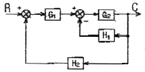
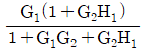
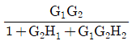
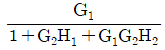
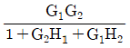
(정답률: 68%)
72. 평형관 콘덴서에 100[V]의 전압이 걸려 있다. 이 전원을 제거한 후 평행관 간격을 처음의 2배로 증가할 경우 정전용량은 어떻게 되는가?
- 1/2로 된다.
- 2배로 된다.
- 1/4로 된다.
- 4배로 된다.
(정답률: 62%)
73. 동일한 저항에 교류와 직류를 동일시간 동안 먼가하였을 때 소비되는 전력량(발열량)이 같은 경우, 이때의 직류값을 정현파 교류의 무엇이라 하는가?
- 실효값
- 파고값
- 평균값
- 파형률
(정답률: 63%)
74. 와류 브레이크(eddy current break)의 특징이나 특성에 대한 설명으로 옳은 것은?
- 전기적 제동으로 마모부분이 심하다.
- 제동토크는 코일의 여자전류에 반비례하다.
- 정지시에는 제동토크가 걸리지 않는다.
- 제동시에는 회전에너지가 냉각작용을 일으키므로 별도의 냉각방식이 필요 없다.
(정답률: 61%)
75. 조각기기로 사용되는 서보 전동기의 설명 중 옳지 않은 것은?
- 제어범위가 넓고 특성 변경이 쉬어야 한다.
- 시정수와 관성이 클수록 좋다.
- 서보 전동기는 그다지 큰 회전력이 요구되지 않아도 된다.
- 급 가ㆍ감속 및 정ㆍ역 운전이 쉬워야 한다.
(정답률: 53%)
76. 그림과 같은 회로에서 저항 R을 E, V, r로 표시하면?
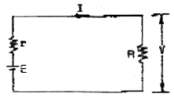
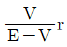
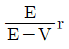
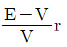
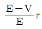
(정답률: 38%)
77. 온도, 유량, 압력 등의 상태량을 제어량으로 하는 제어계로서 프로세스에 가해지는 외란의 억제를 주 목적으로 하는 것은?
- 자동조정
- 서보기구
- 정치제어
- 프로세스제어
(정답률: 69%)
78. 인가전압을 변화시켜서 전동기의 회전수를 900rpm으로 하고자 한다. 이 경우 회전수에 해당되는 것은?
- 목표값
- 조작량
- 제어대상
- 제어량
(정답률: 47%)
79. 6국, 60[Hz]인 유도전동기가 1164[rpm]으로 회전 하며 토크 56[N-m]를 발생할 때의 동기와트는 약 얼마인가?
- 6834[W]
- 6934[W]
- 7034[W]
- 7134[W]
(정답률: 37%)
80. 열차의 무인운전을 위한 제어는 어느 것에 속하는 가?
- 정치제어
- 추중제어
- 비율제어
- 프로그램제어
(정답률: 78%)
5과목: 배관일반
81. 고무량과 가단 주철제의 칼라를 죄어서 이음하는 방법은?
- 플랜지 접합
- 빅토리 접합
- 기계적 접합
- 동관 접합
(정답률: 70%)
82. 고온고압용 관 재료의 구비조건 중 틀린 것은?
- 유체에 대한 내식성이 클 것
- 고온에서 기계적 강도를 유지할 것
- 가공이 용이하고 값이 쌀 것
- 크리이프 강도가 작을 것
(정답률: 85%)
83. 통기관의 설치와 거리가 먼 것은?
- 배수의 흐름을 원활하게 하여 배수관의 부식을 방지한다.
- 봉수가 사이펀 작용으로 파괴되는 것을 방지한다.
- 배수계통 내의 신선한 공기를 유입하기 위해 환기 시킨다.
- 배수계통 내의 배수 및 공기의 흐름을 원활하게 한다.
(정답률: 54%)
84. 캐비테이션(cavitation)현상의 발생 조건이 아닌 것은?
- 흡입양정이 지나치게 클 경우
- 흡입관의 저항이 증대될 경우
- 날개차의 모양이 적당하지 않을 경우
- 관로내의 온도가 감소될 경우
(정답률: 70%)
85. 옥상탱크식 급수방식의 장점이 아닌 것은?
- 급수압력이 일정하다.
- 단수 시에도 일정량의 급수가 가능하다.
- 급수 공급계통에서 물의 오염 가능성이 없다.
- 대규모 급수에 대응이 가능하다.
(정답률: 74%)
86. 밀폐배관계에서는 압력계획이 필요하다. 압력계획을 하는 이유로 적당하지 않은 것은?
- 운전 중 배관계 내에 대기압보다 낮은 개소가 있으면 접속부에서 공기를 흡입할 우려가 있기 때문에
- 운전 중 수온에 알맞은 최소압력 이상으로 유지하지 않으면 순환수 비등이나 플래시 현상 발생우려가 있기 때문에
- 수온의 변화에 의한 체적의 팽창·수축으로 배관 각부에 악영향을 미치기 때문에
- 펌프의 운전으로 배관계 각 부의 압력이 감소하므로 수격작용, 공기정체 등의 문제가 생기기 때문에
(정답률: 51%)
87. 냉동장치에서 압축기의 표시방법이 옳지 않은 것은?
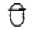
: 밀폐형 일반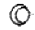
: 로터리형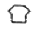
: 원심형- : 왕복등형
(정답률: 77%)
88. 배수관은 피복두께를 보통 10mm 정도를 표준으로 하여 피복하는데 피복의 주목적은?
- 충격방지
- 진동방지
- 방로 및 방음
- 부식방지
(정답률: 68%)
89. 흡수식 냉동기에 대한 설명이다 틀린 것은?
- 주요 부품은, 응축기, 증발기, 발생기, 압축기이다.
- 운전 압력이 낮고 용량제어 특성이 좋고, 부하의 범위가 넓다.
- 진동이나 소음이 적고 건물의 어느 위치에서도 용이하게 설치할 수 있다.
- 흡수식냉동기는 일반적으로 냉매를 물, 흡수액은 취화리듬 수용액을 사용한다.
(정답률: 71%)
90. 냉매의 토출관의 관경을 결정하려고 한다. 틀린 것은?
- 냉매 가스 속에 용해하고 있는 기름이 확실히 운반 될 수 있게 입상관에서는 6m/s이상 되도록 할 것
- 냉매 가스 속에 용해하고 있는 기름이 확실히 운반 될 수 있게 횡형관에서는 6m/s 이상 되도록 할 것
- 속도의 압력 손실 및 소음이 일어나지 않을 정도로 속도를 25m/s로 제한한다.
- 토출관에 의해 발생된 전 마찰 손실압력은 19.6kPa를 넣지 않도록 한다.
(정답률: 58%)
91. 덕트의 단위길이 당 마찰저항이 일정하도록 치수를 결정하는 덕트 설계법은?
- 등마찰손실법
- 정속법
- 등온법
- 정압재취득법
(정답률: 79%)
92. 복사난방에서 패널(panel)코일의 배관방식이 아닌것은?
- 그리드코일식
- 리버스리턴식
- 벤드코일식
- 벽면그리드코일식
(정답률: 68%)
93. 진공환수식 증기난방 배관에 대한 설명으로 옳지 않은 것은?
- 배관 도중에 공기 빼기 밸브를 설치한다.
- 배관에는 적당한 구배를 준다.
- 진공식에는 리프트 피팅에 의해 응축수를 상부로 빨아올릴 수 있으므로 반드시 배관을 방열기 하부에 할 필요는 없다.
- 응축수의 유속이 빠르게 되므로 환수관을 가늘게 할 수가 있다.
(정답률: 57%)
94. 도시가스 입상배관의 관지름이 20mm 일 때 움직이지 않도록 몇 m 마다 고정장치를 부착해야 하는가?
- 1m
- 2m
- 3m
- 4m
(정답률: 81%)
95. 압력계를 설치하지 않아도 되는 곳은?
- 감압밸브 입구측과 출구측
- 펌프 출구측
- 냉각탑 입구측과 출구측
- 증기헤더 출구측
(정답률: 58%)
96. 급수배관에 대한 설명으로 틀린 것은?
- 상향급수 배관 방식에서 상향수직관은 상층으로 올라갈수록 관경을 작게 한다.
- 하향급수 배관방식은 옥상탱크식의 경우에 흔히 사용되는 배관법으로 급수수압이 일정하다.
- 상·하향 혼용배관 방식은 일반적으로 1, 2층은 상향식, 3층 이상은 하향식으로 한다.
- 벽이나 바닥의 관통배관 시에는 슬리브(sleeve) 넣고 배관하여 교체나 수리가 가능하도록 하여야 한다.
(정답률: 61%)
97. 급탕량이 300kg/h이고 급탕온도 80℃, 급수온도 20℃, 중유의 발열량이 10000kcal/kg 가열기의 효율이 60%일 때 연료 소모량은 얼마인가?
- 2kg/h
- 2.5kg/h
- 3kg/h
- 3.5kg/h
(정답률: 50%)
98. 분기관을 만들 때 사용되는 배관 부속품은?
- 유니언(union)
- 엘보(elbow)
- 티(tee)
- 플랜지(flange)
(정답률: 74%)
99. 가스수요의 시간적 변화에 따라 일정한 가스량을 안정하게 공급하고 저장을 할 수 있는 가스홀더의 종류가 아닌 것은?
- 무수(無水)식
- 유수(有水)식
- 주수(柱水)식
- 구(球) 형
(정답률: 70%)
100. 체크밸브를 나타내는 것은?
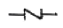
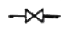
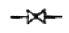
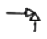
(정답률: 73%)